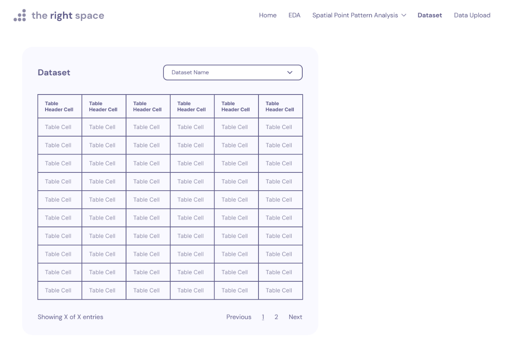
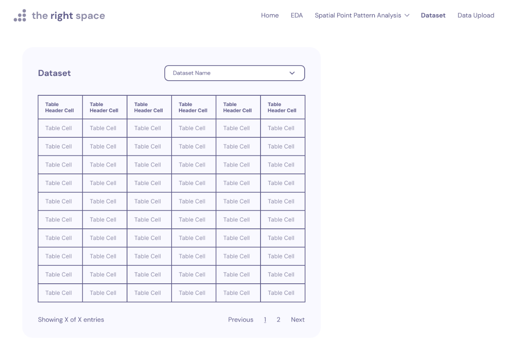

Project Motivation
Many prospective HDB buyers struggle to visualize and understand the amenities and facilities available in the vicinity of their desired location, often having to resort to manual searches on platforms like Google to determine the location of specific types of amenities. Additionally, current mapping tools do not provide a comprehensive and tailored view of amenities specific to HDBs. Our motivation is to simplify this process and make it easier for HDB buyers to view and understand the surrounding amenities through our analytical app. By providing a customized view of amenities relevant to HDB buyers, utilizing spatial point pattern analysis to visualize their distribution and clustering, and offering a user-friendly interface, we aim to help HDB buyers make more informed decisions about their purchases and feel more confident in their chosen residence.
Project Objectives
This study seeks to gather crucial data that one might need to analyse and visualise to perform spatial point pattern analysis to:
Estimate the intensity of HDB locations and amenities across the study area using Kernel Density Estimation.
Determine whether the distribution of amenities around HDBs is random or clustered, and calculate the ratio of observed to expected nearest neighbor distances using F-Function analysis.
Measure the degree of clustering or dispersion of HDB locations and surrounding amenities using Ripley’s K-function and L-function analysis.
Quantify the extent of spatial association and heterogeneity between HDB locations and surrounding amenities using Colocation Quotients (CLQs) analysis.
Conduct Network Constrained Spatial Point Patterns Analysis to analyze the spatial distribution of HDB flats over a street network.
By achieving these objectives, our study aims to gain insights into the spatial distribution of HDB and amenities across the study area, identify significant spatial patterns and trends, and help inform planning and policy decisions related to urban development and resource allocation.
Data Sets
Below is a table of the data sets we will be using for our project.
| Name | Description | File Format | |||
|---|---|---|---|---|---|
| HDB Resale Flat Prices | Provides HDB addresses, blocks and street name | Data.gov.sg | .csv | |||
| School Directory and Information | Provides a list of primary schools in Singapore | Data.gov.sg | .csv | |||
| Shopping Malls | Provides a list of shopping mall and its geometry in Singapore | Web scrapped shopping mall data in 2019 by Valery Lim | .csv | |||
| URA Master Plan 2019 Subzone Boundary | Provides region boundary data | Referenced/taken from Prof Kam | shp | |||
| Bus Stops | Provides a list of bus stops and its geometry in Singapore | Datamall LTA | .shp | |||
| Train Station | Provides a list of MRT/LTR exits and its geometry in Singapore | Datamall LTA | .shp | |||
| Supermarkets | Provides a list of supermarkets in Singapore | Data.gov.sg | .geojson | |||
| Childcare Centres | Provides a list of names, addresses and relevant information for childcare centres in Singapore | Extracted via onemapAPI API Docs | Registration | .rds | |||
| Eldercare Centres | Provides a list of names, addresses and relevant information for eldercare centres in Singapore | Extracted via onemapAPI | .rds | |||
| Kindergartens | Provides a list of names, addresses and relevant information for kindergartens in Singapore | Extracted via onemapAPI | .rds | |||
| Hawker Centres | Provides a list of names, addresses and relevant information for hawker centres in Singapore | Extracted via onemapAPI | .rds | |||
| Healthier Hawker Centres | Provides a list of names, addresses and relevant information for healthier hawker centres in Singapore | Extracted via onemapAPI | .rds | |||
| National Parks | Provides a list of names, addresses and relevant information for national parks in Singapore | Extracted via onemapAPI | .rds | |||
| Gyms | Provides a list of names, addresses and relevant information for gyms in Singapore | Extracted via onemapAPI | .rds | |||
| Retail Pharmacies | Provides a list of names, addresses and relevant information for retail pharmacies in Singapore | Extracted via onemapAPI | .rds | |||
| Singapore Police Force (SPF) Establishments | Provides a list of names, addresses and relevant information for SPF establishments in Singapore | Extracted via onemapAPI | .rds | |||
| Carparks | Provides a list of names, addresses and relevant information for carparks in Singapore | Extracted via onemapAPI | .rds |
Literature Review
#1: Spatial Point Pattern Analysis of Human Settlements and Geographical Associations in Eastern Coastal China - A Case Study (Zhang et al., 2014)
This article highlights the potential of spatial point pattern analysis as a tool for gaining insights into the spatial patterns and associations of human settlements in rapidly urbanising regions. The article used spatial point pattern analysis techniques such as Ripley’s K-function and nearest neighbour analysis, to analyse the spatial distribution and clustering of human settlements in eastern coastal China. Based on their results, it demonstrates the importance of considering spatial relationships and locational factors in understanding settlement patterns and provides insights that can be used to inform urban planning and development policies.
How does it link to our project?
To examine the spatial distribution and clustering of HDB locations and facilities in Singapore. We plan to use the following functions referenced from the article:
Kernel density estimation: To identify areas with high or low concentrations of HDB locations or facilities, and to explore the relationship between HDB locations and surrounding amenities.
Ripley’s K-function: To measure the degree of spatial clustering or dispersion of point locations, which can help identify hotspots or coldspots of HDB locations or facilities and compare the observed spatial distribution of HDB locations or facilities to a random distribution, and test whether the observed pattern is statistically significant.
#2: Analysing the global and local spatial associations of medical resources across Wuhan city using POI data (Chen, Q et al., 2023)
This article highlights the issue of imbalance in the supply and demand of medical resources in provincial capitals of China and emphasises the need to understand the spatial patterns of medical resources to ensure fair and optimal allocation of limited resources. This article utilises the Localised Colocation Quotient (LCLQ) analysis, which is a technique that measures directional spatial associations and heterogeneity between categorical point data. By employing this method and utilising point of interest (POI) data, the study presents a unique analysis of the spatial patterns and directional spatial associations between six medical resources in Wuhan city.
How does it link to our project?
For our project, we need to first define the two types of features of interest which will be HDB locations and the presence of certain amenities. Some examples are schools, carparks, shopping centres and MRT stations. By comparing the observed and expected frequencies of co-occurrence using the LCLQ, we can determine whether HDB locations and surrounding amenities are spatially associated in a non-random way. This can provide insights into the degree to which the availability of amenities in an area affects HDB locations, and vice versa.
Our Approach
Data Preparation
Assemble data from various sources
Data handling and wrangling
Exploratory Data Analysis
Analyse the spatial arrangement of data points
Identify any outliers or anomalies in the data sets
Choropleth Mapping
Spatial Point Patterns Analysis (Filter by: Sub-district/Region)
First point Analysis
- Kernel Density Estimation:
Second point Analysis
F-Function: Identify whether the distribution of amenities around HDBs is random or clustered, and the ratio of observed to expected nearest neighbor distances.
Ripley’s K-function and L function: To measure the degree of clustering or dispersion of HDB locations and surrounding amenities, and help identify significant spatial patterns and trends.
Colocation Quotients CLQs: To measure the extent of spatial association and heterogeneity between HDB locations and surrounding amenities, helping to identify areas of high or low co-location.
Network Constrained Spatial Point Patterns Analysis: To analyse the spatial distribution of HDB flats over a street network
Packages
Below is the list of packages we will be using for our project:
sf: import and handle geospatial data
tidyverse: data wrangling (tidyr, dplyr, ggplot2, tibble)
tmap: plot choropleth maps
maptools: a set of tools for manipulating geographic data
raster: convert grid output to raster layer for visualisation (Kernel Density Estimation)
spatstat: conversion from spatial object to ppp format (Spatial Point Pattern plot)
funModeling: plotting EDA
Application System Architecture

Timeline

Early Storyboard Drafts
We used Figma to create a draft designs of our storyboard on how we imagine our Shiny app to look like. Please click here to view it in Figma.
 

References
Literature review #1: https://www.mdpi.com/1660-4601/11/3/2818
Literature review #2: https://link.springer.com/article/10.1186/s12913-023-09051-0